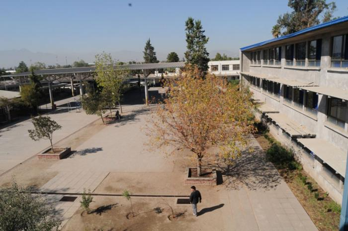
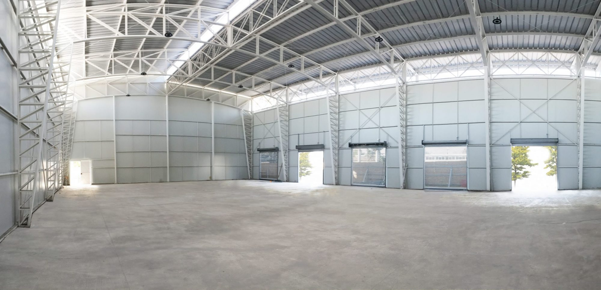

El Colegio Claudio Matte cuenta típicamente con instalaciones que incluyen aulas, laboratorios científicos, biblioteca, gimnasio, áreas deportivas como canchas de fútbol y básquetbol, auditorio o sala de eventos, comedor, patio de recreo, y áreas administrativas como oficinas y salas de profesores. Estas instalaciones varían en detalle dependiendo de cada campus específico del colegio.
 